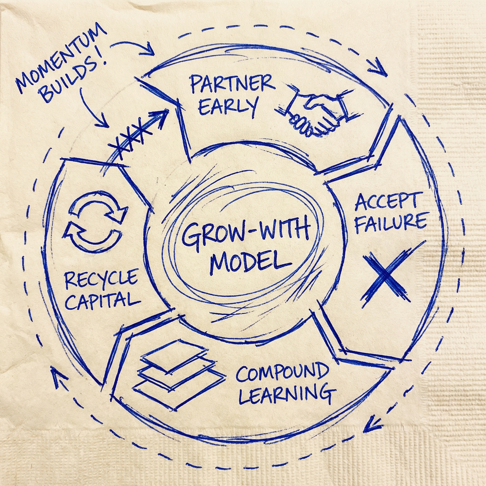
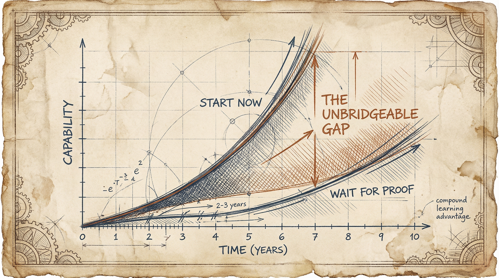

For Directors and Executives Feeling Pressure to Move on AI
The 2-Year Head Start You Can't Buy Back (And the "Grow-With" Model That Creates It)
Singapore discovered something the cautious refuse to see: partnering with unproven AI players early isn't reckless — it's the only way to catch the giants everyone else will overpay for later.
The Illusion That's Costing You Everything
Here's a truth that will make cautious leaders uncomfortable:
"Playing it safe" on AI is an illusion.
It masks the slow, silent decay of everything that makes your organization competitive. Singapore — the world's most stability-obsessed economy — just declared what the cautious refuse to see: in AI-powered economics, avoiding the shift doesn't reduce your risk of failure.
It makes failure inevitable.
This post is for a specific person. The senior leader who has been watching AI developments closely but moving cautiously. The director or executive who feels pressure to act but fears making expensive mistakes. The decision-maker who justifies waiting as "prudent" and "responsible" — while privately worrying that caution is becoming a competitive liability.
If that's you, you're facing three challenges right now:
- The paralysis of proof. You're waiting for AI solutions to prove themselves elsewhere before committing — but by the time they're proven, they're also expensive, commoditized, and everyone has them.
- The budget skeptics. Your board or leadership wants guaranteed ROI before approving AI investments — but AI's value compounds through learning, which means early investments outperform late ones by factors, not percentages.
- The fear of failure headlines. You've seen enough AI projects crash that you'd rather explain inaction than explain a failed initiative — but your competitors are learning from failures while you're avoiding them.
Here's what becomes possible when you adopt what I call the Grow-With Model:
- Transform from a late buyer paying premium prices into an early partner capturing loyalty and learning
- Convert "failure risk" into "learning investment" with clear expected value
- Build institutional knowledge that compounds while competitors start from zero
- Position yourself to catch the future giants — before they're giants
The math isn't complicated. It's just uncomfortable.
What Singapore Saw That You Might Be Missing
Let me tell you a story about the most risk-averse nation on Earth making the boldest AI bet you've never heard of.
Singapore doesn't gamble. The city-state built its entire economic miracle on stability, predictability, and calculated moves. For decades, their strategy was simple: wait for technologies to mature elsewhere, then recruit proven winners to set up regional headquarters. It worked brilliantly.
Until AI changed the rules.
In late 2024, Singapore's Deputy Prime Minister Gan Kim Yong announced something that would have been unthinkable five years earlier. The nation would commit over $1 billion to AI infrastructure and capabilities — and here's the part that matters — they would "position to partner with promising but unproven players early."
Read that again. Unproven players.
The world's most stability-obsessed economy concluded that early partnership with unproven players was safer than waiting for proof.
They did the math on what waiting actually costs — and decided "playing it safe" was the riskiest strategy available.
Singapore wasn't waiting for the next OpenAI to prove itself and then writing a check. They were deliberately seeking out companies that hadn't proven anything yet. Companies that might fail. Companies that most "prudent" investors would avoid.
Why would the world's most stability-obsessed economy suddenly embrace uncertainty?
Because they did the math on what waiting actually costs.
Deputy Prime Minister Gan explained the strategy explicitly: "Rather than waiting for companies to prove themselves elsewhere and then try to recruit them, we aim to position ourselves to partner with promising but unproven players early." He called it accepting "failure as the cost of catching future giants."
This isn't recklessness dressed up as strategy. This is cold calculation.
Singapore recognized that in AI economics, the "safe" path and the "failing" path are the same path. Waiting for proof means arriving after the learning curve has been climbed, after the data network effects have been captured, after the talent has been locked up.
The results are already showing. Singapore's SME AI adoption has tripled from 4.2% to 14.5%. They're not just investing in AI — they're building an ecosystem of learning that will compound for decades.
And here's what should concern you: they're doing this at a national level while most organizations are still debating whether to run a pilot program.
The question isn't whether Singapore's approach is right. The question is: what are you waiting for that they decided wasn't worth waiting for?
The Grow-With Model: A Framework for the Uncomfortable Math

The Grow-With Model isn't about being reckless with AI investments. It's about understanding the actual math of AI value creation — math that punishes waiting and rewards learning.
Here's how it works:
Stage 1: Partner Early (Before Proof)
The traditional approach says wait until AI solutions are proven, then buy them. This feels safe. It isn't.
The Grow-With Model says partner with promising players before they're proven. Accept that some will fail. Do it anyway.
Why? Because early partnership creates two things you cannot buy later:
Loyalty. When you partner with a company before they're successful, you earn a relationship that late buyers can't purchase. The AI startup that remembers you took a chance on them treats you differently than the AI giant processing your vendor application.
Learning. Your organization starts building institutional knowledge from day one. Not theoretical knowledge from case studies — operational knowledge from doing. By the time your competitors start their first pilot, you're on your fifth iteration.
Source: MIT Sloan Management Review & BCG (Ransbotham, Kiron, Gerbert & Reeves, 2024)
A 2024 study by MIT Sloan Management Review and Boston Consulting Group (Ransbotham, Kiron, Gerbert & Reeves) confirms this: organizations with clear AI strategies see 80% success rates on AI initiatives. Those without strategy? Just 37%. The difference isn't budget. It's learning accumulated through early, intentional action.
Stage 2: Accept Failure as Investment
This is where most leaders get stuck. They think of AI failures as losses. The Grow-With Model reframes failure as tuition.
Consider the expected value calculation Singapore made explicit:
If you partner with 10 promising AI players early, and 7 fail, you've "lost" on 7 investments. But the 3 that succeed? You have relationships, learning, and positions that late movers will pay 10x to acquire — if they can acquire them at all.
The math works because AI value follows power laws, not normal distributions. One successful early partnership can return more than ten failed ones cost. But only if you're in the game early enough to catch the winners before they're obvious.
Failure isn't the risk. Failure is the tuition for catching giants.
A 2025 Harvard Business Review analysis found that early AI adopters generate $3.70 in return for every $1 invested. Late adopters buy the same capabilities at commodity prices with none of the accumulated learning.
A 2025 Harvard Business Review analysis by Fountaine, McCarthy, and Saleh found that early AI adopters generate $3.70 in return for every $1 invested in generative AI. Late adopters? They're buying the same capabilities at commodity prices with none of the accumulated learning.
Stage 3: Compound the Learning Curve
Here's where the Grow-With Model separates from ordinary "early adoption" advice.
AI capabilities don't just accumulate. They compound.
Every AI initiative you run generates data. That data improves your models. Better models generate insights. Those insights inform your next initiative. Which generates more data.
This is a flywheel, and it has a cruel property: the gap between early starters and late starters doesn't stay constant. It grows exponentially.
Research from McKinsey's 2024 State of AI report shows that AI learning curves run 2-4 years. This means an organization that starts in 2026 doesn't just have a one-year head start on an organization that starts in 2027. They have a one-year head start on a learning curve that compounds.
By year three, the early starter isn't one year ahead. They might be three years ahead in effective capability. By year five, the gap could be insurmountable.
This is what Singapore understood. They're not just investing in AI. They're investing in the learning curve that AI creates. That learning curve is the real asset — and it cannot be purchased later at any price.
Stage 4: Recycle the Capital
The final stage of the Grow-With Model addresses what happens when partners fail.
Singapore's approach includes explicitly supporting "better exits at correct valuations." This isn't about cutting losses. It's about recycling learning.
When an AI partnership doesn't work out, the traditional approach treats it as sunk cost. Write it off. Don't mention it in board meetings.
The Grow-With Model treats failed partnerships as generators of two valuable assets:
- Institutional knowledge about what doesn't work in your specific context
- Freed capital to deploy toward the next promising player
The organizations that learn fastest aren't the ones with no failures. They extract maximum learning from every failure. Then they redeploy capital quickly toward the next opportunity.
This creates a flywheel: Partner early → Accept that some fail → Compound learning from both successes and failures → Recycle capital toward new partners → Partner early again.
Picture the Grow-With Model as a flywheel with four interconnected stages. At the top: Partner Early. Moving clockwise: Accept Failure as Investment. At the bottom: Compound the Learning. On the left: Recycle the Capital. Arrows show momentum building with each rotation. The faster you cycle through all four stages, the more momentum you build — and the harder it becomes for late starters to catch up.
Each cycle through the flywheel builds momentum. Each cycle widens the gap with competitors who are still waiting for proof.
The Evidence: Five Ways This Plays Out
1. The National Laboratory: Singapore's $1B Experiment
Singapore's pivot isn't theoretical. It's the largest national-scale test of the Grow-With Model in history.
The numbers tell the story:
- Over $1 billion committed to AI infrastructure
- SME AI adoption tripling from 4.2% to 14.5%
- Explicit strategy to partner with "promising but unproven" players
- National goal to "build enduring and mutually beneficial relationships" with AI startups
But the real insight is in why they made this shift. Singapore's leaders recognized that their traditional playbook — wait for proof, recruit winners — would fail in AI economics.
In previous technology waves, waiting was viable. The internet matured. Mobile matured. Cloud matured. You could arrive late and still compete.
AI is different. AI capabilities compound through data and learning. The organizations that start early don't just get a head start. They get a head start on a curve that accelerates. Waiting doesn't mean arriving late. It means arriving too late to catch up.
Singapore saw this clearly. The question is: why aren't you?
2. The Costly Detour: When "Prudent" Becomes Expensive
Consider the large retailer who shall remain nameless — but whose story I've seen repeated across industries.
Over four years, this retailer attempted 15 separate AI proofs-of-concept. Each one was carefully scoped to minimize risk. Each one followed procurement best practices. Each one engaged established vendors with proven solutions.
Total investment: $680,000.
Total successful deployments: Zero.
The "prudent" approach didn't reduce risk. It concentrated risk into a single catastrophic outcome: spending four years and $680,000 to learn nothing while competitors built insurmountable advantages.
Meanwhile, their competitors — the ones who partnered with unproven AI startups and accepted failure as learning cost — were deploying AI across customer service, inventory optimization, and demand forecasting.
The retailer eventually succeeded with AI. But only after abandoning the cautious approach and adopting something very close to the Grow-With Model: smaller investments in promising partners, explicit learning goals, fast cycles, accepted failures.
The tragedy is the four years they can't get back. Four years on a learning curve their competitors started climbing in year one.
3. The Quiet Win: Starting Small to Scale Fast
Not every Grow-With story involves billion-dollar bets or spectacular failures.
A mid-market professional services firm — 200 employees, traditional industry — adopted a version of the Grow-With Model almost by accident.
Their approach was simple: identify three AI capabilities they wished existed for their business. Find emerging AI tools — not established players — that might provide those capabilities. Run 90-day pilots with explicit learning goals. Accept that some would fail.
Results after 18 months:
- 2 of 3 initial partnerships failed
- 1 succeeded and scaled across the organization
- 4 additional partnerships launched based on learnings from failures
- 2 of those succeeded
- Net position: 3 successful AI capabilities, institutional knowledge from 3 failures, and a learning curve 18 months ahead of competitors still waiting for "proven" solutions
The partners they succeeded with? Two of them have since become established players with premium pricing. The firm locked in relationships and pricing before the premium existed.
This is the Grow-With Model at scale: not reckless betting, but intentional learning through early partnership.
4. The Director Still Waiting
Picture this director. Maybe you know them. Maybe you are them.
They've been watching AI developments for three years. They've attended conferences. They've read the research. They understand the potential.
But every time a decision point arrives, they wait. The technology isn't mature enough. The vendor isn't proven enough. The ROI isn't clear enough. The timing isn't right.
Three years later, the technology has matured — and so have competitors' capabilities. The vendors are proven — and so are their premium prices. The ROI is clear — but so is the gap between the director's organization and everyone who started earlier.
Source: BCG 2025 AI Radar Report
According to BCG's 2025 AI Radar report, while 72-78% of organizations report using AI, only 5% have achieved "future-built" status. A full 60% remain in the laggard category.
The gap between "using AI" and "being transformed by AI" is a learning curve. And that learning curve started three years ago.
The director's competitors didn't have better budgets or better vendors or better technology. They had a willingness to start before everything was proven. Now they have a lead that can't be purchased.

5. The Cautionary Tale We Keep Ignoring
You know this story. Kodak invented the digital camera and waited for it to mature. Blockbuster had the chance to buy Netflix for $50 million and decided the technology was unproven.
We tell these stories as warnings about missing disruption. But we miss the deeper lesson.
Kodak and Blockbuster didn't fail because they ignored new technology. They failed because they applied exactly the reasoning that "prudent" AI decision-makers apply today:
- Wait for the technology to mature
- Let others take the risk of proving concepts
- Move when the path is clear and the ROI is guaranteed
This reasoning protects you from making visible mistakes. It doesn't protect you from slow decay.
By the time Kodak decided digital was mature enough, competitors had already climbed the learning curve. By the time Blockbuster recognized streaming was "proven," Netflix had accumulated years of data on viewing preferences that couldn't be replicated.
The lesson isn't "adopt every new technology." The lesson is: in technologies where learning compounds, waiting for proof IS the failure mode.
AI is exactly this kind of technology.
The Myth That's Keeping You Stuck
The Myth: "Playing it safe reduces our risk of failure."
You believe this because you've seen technology failures. AI has a 37% success rate without strategy (per the MIT/BCG study cited earlier). You've watched companies waste millions on AI initiatives that went nowhere. You've read the headlines about chatbots gone wrong and algorithms with bias.
The logic seems clear: wait for the technology to mature, let others make the mistakes, learn from their failures without paying their costs.
This logic is a trap.
Here's what the "safe" approach actually produces:
Silent decay. While you wait for proven solutions, competitors are building learning advantages that compound daily. You can't see this decay because it's not a crisis. It's just gradual erosion of competitive position.
Source: Salesforce 2024 State of IT Report
Shadow AI. According to Salesforce's 2024 State of IT report, 71% of employees are already using AI tools — with or without corporate strategy. Your "wait and see" approach isn't preventing AI adoption. It's just making that adoption invisible, ungoverned, and disconnected from organizational learning.
Talent flight. The best people want to work on the future. An organization that won't engage with AI signals that it's optimizing for the past. Your caution isn't just slowing technology adoption — it's accelerating talent departure.
Customer experience gap. Customers don't wait for your technology strategy. They experience the gap between what competitors offer and what you offer. Every month you wait, that gap widens.
In AI economics, the cautious path and the failing path are the same path.
When value compounds through learning, and learning requires action, then inaction isn't caution. Inaction is choosing the path where you fall further behind every day.
This isn't pessimism. It's math. When value compounds through learning, and learning requires action, then inaction isn't caution. Inaction is choosing the path where you fall further behind every day.
What becomes possible when you release this myth?
You stop asking "how do we avoid AI failures?" and start asking "how do we learn from AI failures faster than competitors?"
You stop budgeting for guaranteed ROI and start budgeting for expected value across a portfolio of experiments.
You stop waiting for proof and start generating it.
The Grow-With Model doesn't eliminate failure. It reframes failure as the tuition for catching future giants before they're giants.
Singapore understood this. The most stability-obsessed economy on Earth decided that "playing it safe" was the riskiest strategy available.
What are you waiting for that they decided wasn't worth waiting for?
Your 4-Week Path to the Grow-With Model
Understanding is not the same as doing. Here's how to move from insight to action in four weeks.
Week 1: Audit the Truth
Before you can grow with AI partners, you need to understand where you actually are.
Primary task: Map where AI is already happening in your organization — with or without you.
According to Salesforce's research, 71% of employees are using AI tools regardless of corporate strategy. This isn't a prediction for your organization. It's almost certainly already true. Your job this week is to find it.
Talk to people who interact with customers. Ask about the tools they use. Look for ChatGPT, Claude, Copilot, Jasper, and dozens of others hiding in browser tabs and personal subscriptions.
This isn't an enforcement exercise. It's a learning exercise. Shadow AI tells you two things: where your organization has pain points that AI could address, and where your people are already learning — learning you could be capturing.
This isn't an enforcement exercise. It's a learning exercise. Shadow AI tells you two things:
- Where your organization has pain points that AI could address
- Where your people are already learning — learning you could be capturing
By the end of Week 1, you should have a map of:
- Where AI is being used unofficially
- What problems those tools are solving
- What learning is happening that you're not capturing
Week 2: Identify Your First Partners
Primary task: Find 1-3 promising AI partners. Not proven giants. Promising players.
The instinct will be to look for established vendors with case studies and testimonials. Resist this instinct. By the time an AI company has case studies, you've lost the learning advantage.
Instead, look for:
- Companies solving problems specific to your industry
- Tools your shadow AI audit revealed employees already value
- Startups with strong technical teams and emerging traction
- Partners where your data or use case would be valuable to them
The goal isn't to find partners who have proven themselves elsewhere. The goal is to find partners who could prove themselves with you — and who would remember that you took a chance on them.
Set initial budgets that assume failure. If you'd be devastated to lose the investment, it's too big. Think: tuition for learning, not bet-the-company deployment.
Week 3: Start One Experiment
Primary task: Launch a single pilot with explicit learning goals.
Notice: learning goals, not ROI goals.
Traditional pilots ask "did this work?" Grow-With pilots ask "what did we learn?"
Design your pilot to answer questions:
- How does this tool perform with our specific data?
- What does adoption look like with our specific team?
- Where are the friction points we'd need to address at scale?
- What would we do differently in the next experiment?
Set a timeframe (90 days is typical) and define what you're measuring. But measure learning, not just success.
A pilot that "fails" but teaches you exactly what to look for in your next partner is more valuable than a pilot that "succeeds" but teaches you nothing about scaling.
Week 4: Build the Loop
Primary task: Create infrastructure for learning and pivoting.
The Grow-With Model isn't a one-time decision. It's an operating rhythm.
By Week 4, you should have:
- A feedback mechanism: How does learning from pilots flow to decision-makers?
- A portfolio view: How will you track multiple experiments at different stages?
- A pivot protocol: When does a pilot get more investment? When does it get sunset?
- A knowledge base: Where does learning get captured for future experiments?
This infrastructure doesn't need to be sophisticated. A shared document and a weekly 30-minute meeting can work. What matters is that learning compounds — that experiment #5 benefits from experiments #1-4.
Quick-Start Checklist
- □ Interview 5 employees across departments: "What AI tools are you using?" (Week 1)
- □ Document 3 pain points where shadow AI is already being applied (Week 1)
- □ Research and shortlist 3 emerging AI partners in your problem space (Week 2)
- □ Write 3 questions this pilot will answer — learning goals, not ROI goals (Week 3)
- □ Establish 90-day pilot timeline with weekly check-ins (Week 3)
- □ Create a shared doc for capturing learnings from every experiment (Week 4)
- □ Schedule first 30-minute portfolio review meeting (Week 4)
Common Obstacles and Solutions
Obstacle 1: "We can't get budget for unproven solutions."
Reframe the conversation. You're not asking for budget for unproven solutions. You're asking for learning budget — R&D for understanding how AI works in your specific context. Compare to what competitors are investing. Compare to the cost of arriving 2-4 years late to a compounding learning curve.
Obstacle 2: "Our IT/security team won't approve unknown vendors."
Start with sandboxed pilots. Use non-sensitive data. Build the track record that earns expanded access. Meanwhile, document the shadow AI already happening — which IT can't see and can't govern. Framing changes from "let's try risky new vendors" to "let's bring existing usage under governance."
Obstacle 3: "Leadership wants guaranteed ROI before approving."
Present the portfolio math. No single AI experiment has guaranteed ROI. But a portfolio of experiments has expected value — and that expected value, according to the HBR research, is strongly positive for early movers ($3.70 per $1 invested). The question isn't whether any specific experiment will succeed. The question is whether learning now is more valuable than learning later. The math says yes.
Realistic Expectations
What NOT to expect:
- Immediate ROI from your first pilot
- Zero failures in your AI portfolio
- Buy-in from everyone in your organization
- AI solutions that work perfectly out of the box
What TO expect:
- Learning that informs your second pilot
- Some failures that teach you what to avoid
- Growing internal capability and confidence
- Compound advantage over organizations still waiting
The goal isn't to get AI right on the first try. The goal is to start the learning curve that compounds. Every week you wait is a week of compounding you don't get back.
The Path Forward
Let me leave you with one quotable truth:
In AI economics, waiting for proof is the proof that you'll arrive too late.
The Grow-With Model isn't about being reckless. It's about being honest. Honest about the math of compounding learning curves. Honest about the cost of arriving late to technologies that reward early learners. Honest about the illusion that "playing it safe" reduces risk.
Singapore — the world's most cautious economy — did this math and concluded that early partnership with unproven players was safer than waiting for proof. They're investing over $1 billion on this conclusion.
If you're a leader who has been watching AI closely but moving cautiously, here's what I want you to understand:
Your caution isn't protecting you. It's just making the failure invisible until it's too late to reverse.
The leaders who win at this aren't the ones with perfect strategies or unlimited budgets. They're the ones who started the learning curve before the pressure became crisis.
The one thing to do this week: Find the shadow AI in your organization. Ask three people who interact with customers what AI tools they're using. Whatever you discover, that's your starting point. That's where learning is already happening. That's where the Grow-With Model can begin.
You don't need a billion dollars. You don't need perfect strategy. You just need to start the learning curve that will compound in your favor.
The 2-year head start you're looking for? It starts with one honest audit and one small pilot.
The giants you'll partner with in 2028? They're unproven players right now — waiting to grow with someone who believes in them early.
The question isn't whether you can afford to take this risk.
The question is whether you can afford not to.
If you found this perspective valuable, share it with a colleague who's navigating the same AI decisions. The leaders who will thrive in AI-powered economics aren't the ones who avoided all risk. They're the ones who learned fastest.